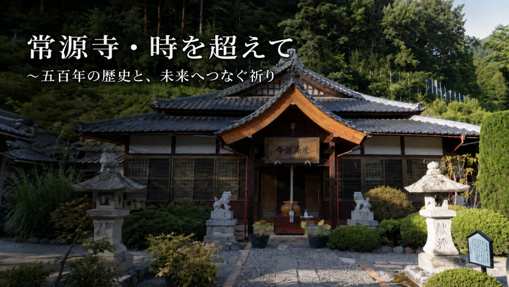

相木市兵衛が語る「後世の人へ」
資料をもとに構成した再現音声です。

戦国の世から約五百年。常源寺と南相木に受け継がれてきた歴史、祈り、文化を、 写真・音声・映像でたどる個人制作のデジタルアーカイブです。
このサイトは常源寺が公式に運営・開設しているホームページではなく、 常源寺の歴史と文化を後世に伝えたいという思いから、 開設者個人が資料を収集・整理して制作したものです。
掲載している歴史資料の一部は、常源寺が昭和63年（1988年）に発行した 再建記念誌などを参考・引用しています。
一部の画像制作、音声による語りや会話などにはAI（人工知能）を活用しています。 AIによる画像や音声表現には、残された資料をもとにした再現・演出が含まれており、 当時の写真・映像・実際の音声そのものではありません。
本サイトの内容は常源寺の公式見解を示すものではありません。 新たな資料の確認などにより、内容を修正する場合があります。
音声
時代の流れを先に見ると、各資料が分かりやすくなります。
大井氏との関係、武田氏の進出の中で南相木の歴史が動きます。
領主・相木市兵衛常喜公によって創建され、節香徳忠禅師を開山として迎えたと伝えられます。
大洪水の記憶と供養の伝統が、地域に語り継がれています。
常源寺の歴史を後世に伝える重要な資料の一つです。
写真・音声・映像を通して、地域の歴史と文化をデジタルで伝えます。
三つの講話を順番に聴くと、歴史の流れがつながります。
資料をもとに構成した再現音声です。
佐久を支えた相木氏の歩みと、その時代背景をたどります。
郷土の山河と領民を守るために下した決断をたどります。
信玄との対話、奉納、そして南相木の平和への歩みをたどります。
現在GitHubにある音声ファイルをそのまま利用します。
現在GitHubにある18枚の写真を順番に表示します。
テーマソング、YouTube、クイズなどをまとめています。
掲載している歴史資料の一部は、常源寺が昭和63年（1988年）に発行した 再建記念誌などを参考・引用しています。